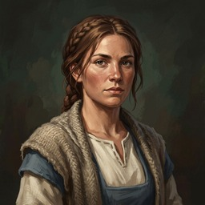
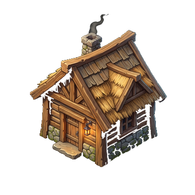
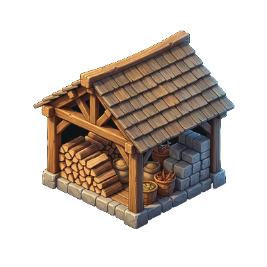

DAWN OF KIN · UI-0 R2.1 · REFINAMENTO EXCLUSIVO DA DIREÇÃO D2
Marcos de Pedra e Eclipse — Sistema Arquitetural Unificado (D2.1)
Basalto da Terra Selvagem · Fenda de Aurora estrutural (zero linhas sobre texto) · Maquetes de Alabastro · Díptico da Casa Fundadora
100% Alinhado ao GDD v1.2 (sem cultura japonesa/ema)
Atlas 2D pré-assado + Showcase Interativo Godot 4.7.2
Atlas 2D pré-assado + Showcase Interativo Godot 4.7.2
1. Assinatura Exclusiva: Chanfro 8° + Fenda de Aurora
Basalto · Mundo & Memória
Alabastro · Criação & Obra
Todo bloco compartilha o mesmo chanfro arquitetural de 8° e um Veio de Aurora restrito à aresta de encaixe (nunca atravessando texto). As quatro âncoras alinham-se por prumos verticais invisíveis sem exigir barra contínua.
2. Gramática Funcional de Materiais & Cores
Basalto Bruto
#181B1F
Mundo & Memória
Veio de Aurora
#DFBC72
Conexão & Foco
Alabastro
#EFEADF
Criação & Obra
Musgo Mineral
#799E66
Válido / Ativo
Terracota
#C8644B
Bloqueio / Alerta
3. Adequação ao GDD (Transformação Autoral)
• Removido: referências japonesas (ema, arquipélago, templos) ausentes do GDD v1.2.
• Transformado: basalto escuro + fenda dourada expressam a Terra selvagem sem ruínas e a dualidade oculta Luz × Sombra (GDD §2.1).
• Alabastro funcional: reserva-se exclusivamente à intenção construtiva e ações primárias.
4. Hierarquia Tipográfica & Bandejas de Leitura
DAWN OF KIN · Casa Fundadora
Sobrevivência · Linhagem · Construção · Continuidade
Números tabulares em bandejas rebaixadas: Madeira 24 · Pedra 14 · Alimentos 18 · 42% · 4,0 m/s
5. Iconografia Mineral Exclusiva (Traço 1,5 px)
Madeira
Pedra
Alimentos
Construir
Tarefas
Linhagem
Ciclo
Alerta
6. Estados Interativos & Encaixes
Repouso
Hover / Foco
Alabastro Ativo
Proposta / Futuro
7. Por que D2.1 Supera a D2 Original (Correção dos 5 Problemas)
1. Composição Unificada: ângulo único de 8°, prumos verticais e bloco único de estoques com bandejas.
2. Zero Sobreposição: veios migram do centro do texto para as arestas de encaixe estrutural.
3. Díptico Familiar: Alden e Brena compartilham uma fenda central com emblema + laje deslizante.
4. Mesa de Maquetes + Menu: prancha horizontal em alabastro e chaves de pedra encaixadas na fenda.
8. Díptico dos Fundadores & Pilar de Linhagem


Alden
Elevado · Pessoal

Brena
Coletando
Os fundadores formam uma peça dupla indivisível ligada pelo Veio da União. Clicar eleva a metade selecionada e desliza a Laje de Inspeção à direita.
9. Arquitetura de Construção (Mesa de Maquetes)


Prancha horizontal em alabastro com abas de Nível I–III, miniaturas 3D acima do bisel e faixas-chave verde/terracota para prévia válida/inválida.
10. Regras de Consistência (HUD · Construção · Menu)
1. Bisel único (8°): todas as telas compartilham a mesma inclinação e encaixe.
2. Margem limpa ≥ 12 px: nenhum texto toca aresta metálica ou borda chanfrada.
3. Esc hierárquico: cancela prévia → fecha inspetor/linhagem → desseleciona → pausa.
4. Zero click-through: peças sólidas usam
MOUSE_FILTER_STOP; raiz IGNORE.